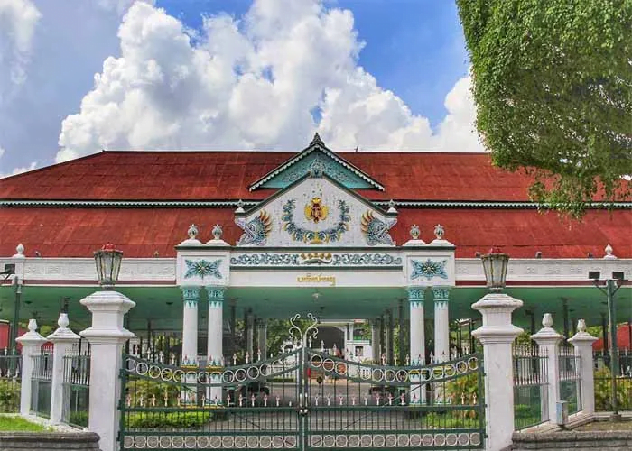
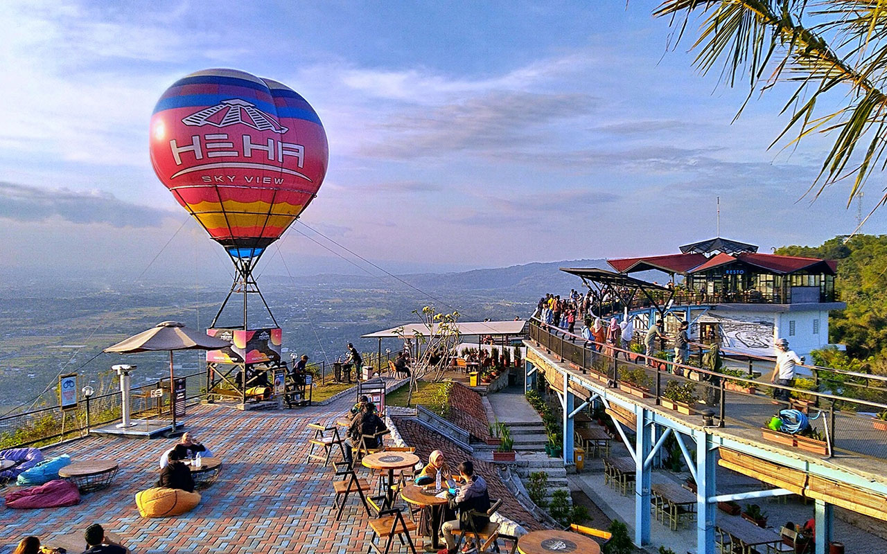
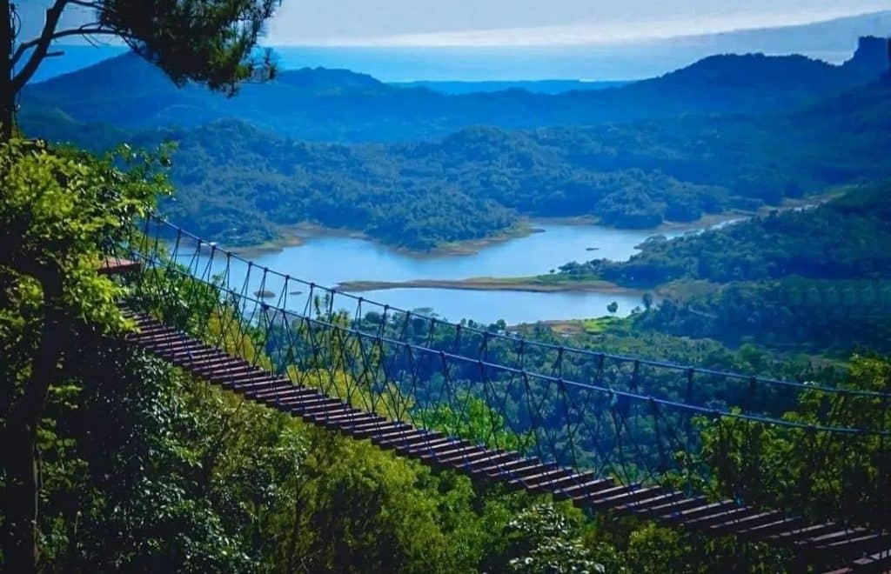
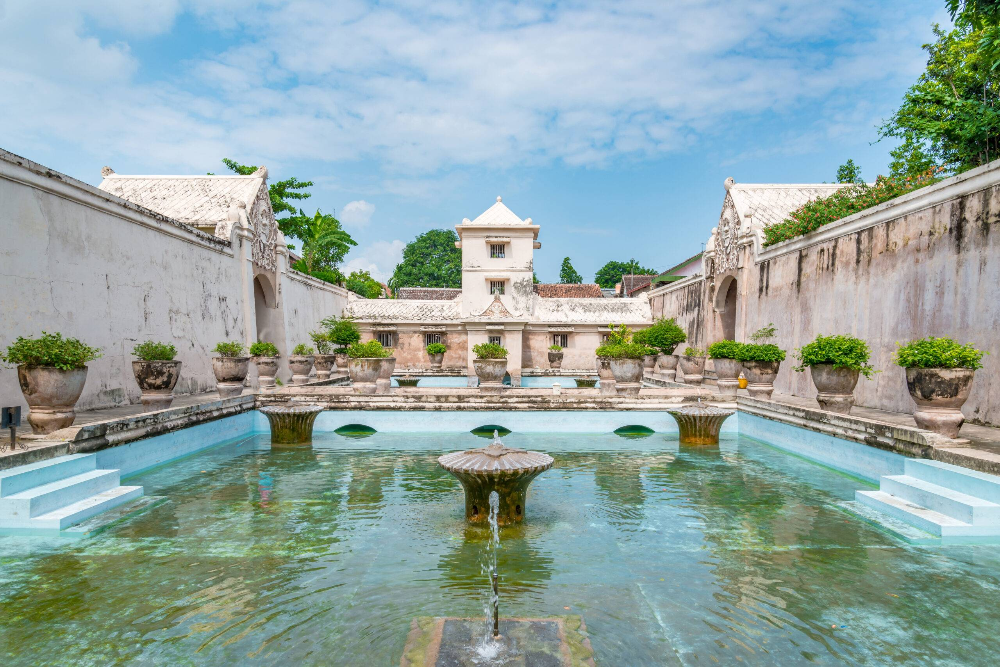
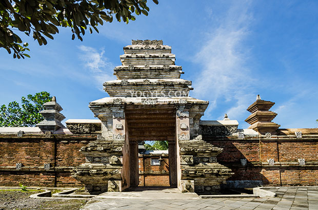
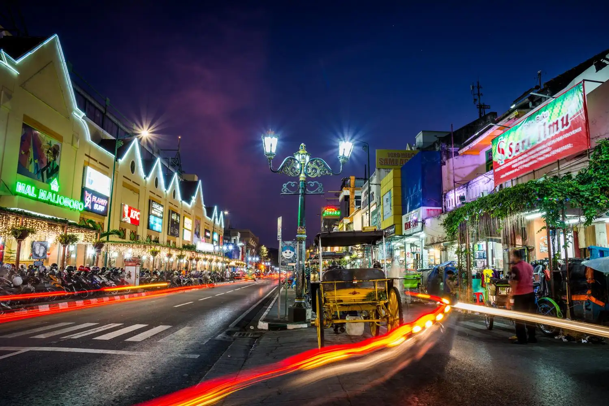
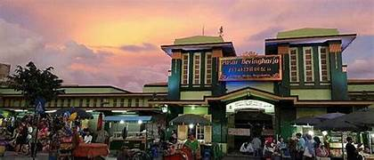
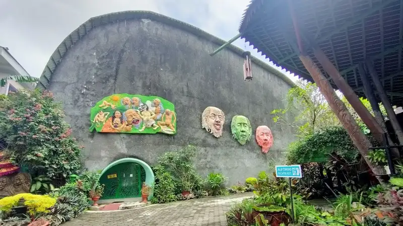

Mengenal Lebih Dekat
Seribu Wajah Jogja

Yogyakarta bukan sekadar titik koordinat di peta. Ia adalah ruang rasa di mana **tradisi keraton**, **kehangatan masyarakat**, dan **bentang alam yang magis** melebur menjadi satu. Lebih dari sekadar destinasi liburan, Jogja adalah tempat pulang bagi siapapun yang merindukan kedamaian batin.
01
Culture & Heritage
Keraton • Batik • MalioboroSelami denyut nadi kebudayaan Jawa lewat keagungan arsitektur istana, kelembutan gerak tari klasik, hingga magisnya alunan gamelan di malam hari.
02
Culinary & Hospitality
Gudeg • Kopi Joss • AngkringanManjakan lidah dengan kelezatan Gudeg legendaris, kehangatan wedang ronde, hingga obrolan hangat penuh kekeluargaan di angkringan pinggir jalan.
03
Nature & Landscape
Merapi • Pantai Selatan • Gumuk PasirJelajahi lanskap alam yang dramatis, mulai dari sejuknya lereng Merapi, pesona tebing karst Gunungkidul, hingga matahari terbenam yang syahdu di Parangtritis.
Istimewa Pemimpinnya, Istimewa Rakyatnya
Filosofi hidup bergotong-royong dan kebersamaan yang ramah menyambut setiap pelancong.
Keraton &
Sejarah Kota
Yogyakarta berdiri dari Perjanjian Giyanti tahun 1755, ketika Kerajaan Mataram Islam dibagi dua menjadi Kasunanan Surakarta dan Kesultanan Yogyakarta. Sultan Hamengkubuwono I mendirikan Keraton sebagai pusat kosmologi dan pemerintahan.
Keraton Yogyakarta bukan sekadar istana — ia adalah poros sumbu imajiner yang menghubungkan Gunung Merapi di utara, Keraton di tengah, dan Pantai Parangtritis di selatan. Sebuah konsep filosofi Jawa tentang keseimbangan alam semesta.
Dalam perjuangan kemerdekaan Indonesia, Yogyakarta tampil sebagai Ibu Kota Republik pada 1946–1950, menjadi benteng terakhir melawan agresi militer Belanda dan simbol ketahanan bangsa.
Perjanjian Giyanti
Pembagian Mataram Islam; berdirinya Kesultanan Yogyakarta di bawah Sri Sultan Hamengkubuwono I.
Pembangunan Keraton
Keraton Yogyakarta dibangun di atas tanah yang dipilih dengan ritual kejawen dan perhitungan kosmis.
Ibu Kota Republik
Yogyakarta menjadi Ibu Kota RI, pusat perlawanan revolusi kemerdekaan Indonesia.
Makanan
Khas Jogja
 🍵
🍵
Jejak
Warisan Budaya
Yogyakarta bukan sekadar kota, melainkan ruang hidup bagi tradisi yang terus bernapas. Jelajahi kekayaan adiluhung yang telah diwariskan lintas generasi, menjadi identitas yang menjaga harmoni di tanah Mataram.
Batik
Simbol filosofis yang dilukis di atas kain dengan penuh ketelitian.
Tarian Adat
Gerakan gemulai yang mengisahkan nilai kehidupan dan spiritualitas.
Wayang
Pertunjukan bayang-bayang yang membawa pesan moral dan kearifan lokal.
Upacara Adat
Ritual penuh khidmat sebagai wujud syukur dan penghormatan pada leluhur.
Eksplorasi
Ragam Destinasi








